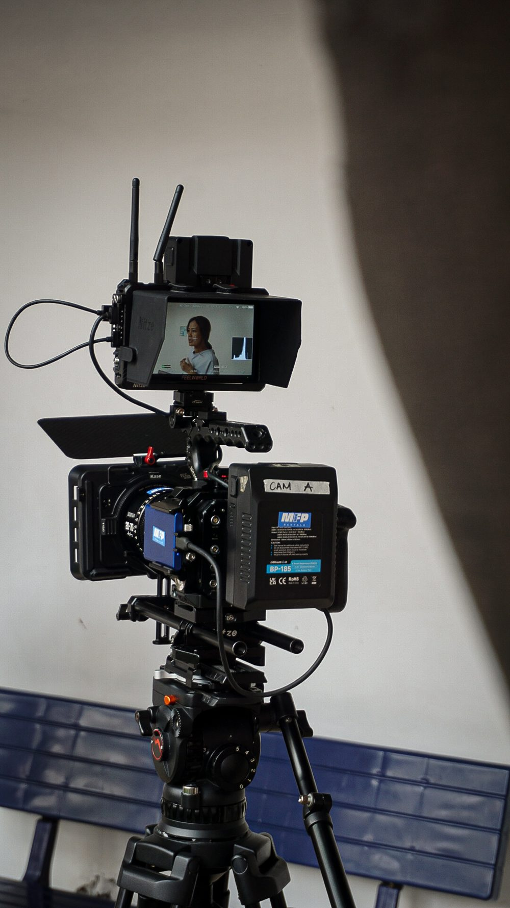

Stories through a different lens.
APERTURE
We capture real moments, tell meaningful stories, and bring ideas to life through photography, documentaries, and cinematic video.

The art of storytelling
EVERY FRAME
EVERY FRAME
HAS A STORY.
Through documentary film and photography, we explore real moments and the perspectives that make them meaningful.
DISCOVER OUR STORIES
Featured Documentaries
Selected documentaries.
Two original documentaries that tell real stories from our communities.